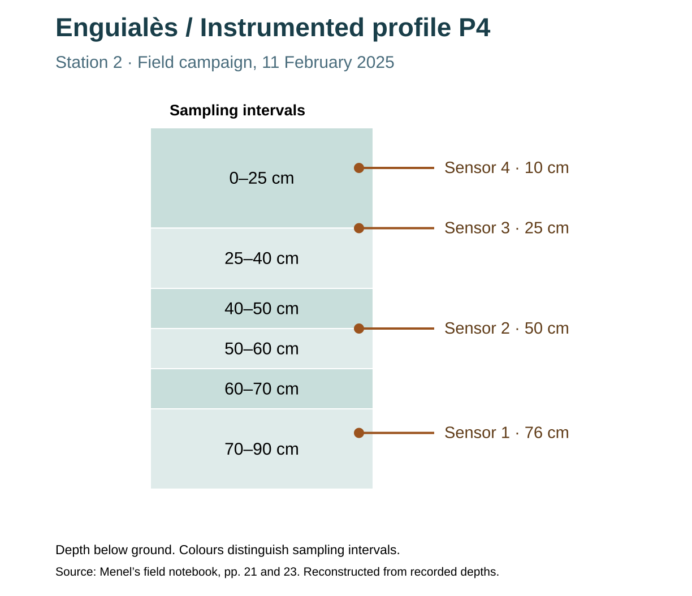

Enguialès mine waste
From field investigations to leaching experiments.
At the former Enguialès mine site, I investigated arsenic and iron mobility in mine waste. My GEOPS internship combined a sampling and instrumentation campaign with laboratory experiments using simulated rainfall.
In the field · 11 February 2025
On 11 February 2025, I contributed to site instrumentation and recorded sampling locations, sensor depths and the conditions encountered. At point P3, the team reached rock at around 20 cm. We moved the profile a few metres. At the new location, P4, we were able to sample soil down to 90 cm and install four sensors. The notebook records both the reason for the move and the depths selected.

The station was configured to record soil water content, temperature and conductivity every five minutes. Sensors at 25 and 50 cm coincide with sampling boundaries, a detail to retain when interpreting their measurements.
View sampling intervals and sensor depths
| 0–25 cm |
| 25–40 cm |
| 40–50 cm |
| 50–60 cm |
| 60–70 cm |
| 70–90 cm |
| Sensor | cm |
|---|---|
| Sensor 4 | 10 cm |
| Sensor 3 | 25 cm |
| Sensor 2 | 50 cm |
| Sensor 1 | 76 cm |
From sample tube to result
At ENG31, the notebook connects the sampling-point identifier with water measurements and three 15 mL tubes of water filtered at 0.45 µm, intended for cation, anion and minor or trace-element analyses.
| Location | pH | Conductivity (µS/cm) |
|---|---|---|
| ENG31 | 3.22 | 906 |
| Mine-water outlet | 3.17 | 1 128 |
These measurements characterise sampling conditions. Conductivity provides an overall indication of ions in solution; the study of iron and arsenic relies on their specific analytical measurements in the laboratory experiments.
In the laboratory · Comparing mine waste
I compared three mine-waste samples subjected to six simulated-rainfall cycles, monitoring leachate chemistry. The purpose was to examine how waste type and successive water inputs influence the release of the elements studied.
The work also included water-table fluctuation and hardpan leaching protocols over five cycles each, together with EN 12457-2, NAG and TCLP batch tests. Monitoring combined pH, conductivity, ion chromatography and atomic absorption spectrometry for iron and arsenic.
Time-series processing and interpretation of SEM images and existing XRD results supported the synthesis. I presented this work orally and as a scientific poster.